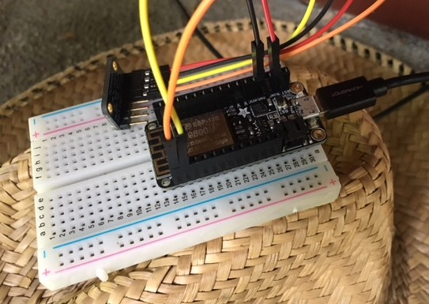
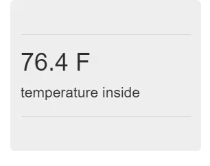

This post is the first part of a series of blog posts about building an Internet-of-Things (IoT) server with flask, Python and ESP8266 microcontrollers. In this post we'll I'll discuss the problem I'm trying to solve and the issues I have with the current solution. We'll also review what the Internet-of-Things (IoT) is, and what an IoT server does.
Introduction
In the next couple of posts, I'm going to demonstrate how I built an Internet-of-Things server with flask and Python. The Internet-of-Things (IoT) is a network of computers, phones, tablets and physical devices like thermostats, garage door openers, light bulbs, doorbell cameras, weather stations connected to each other. When we talk about the Internet, we are usually referring to computers, tablets, phones and servers communicating with web pages, programs and apps. The Internet-of-Things builds on the Internet by including devices other than computers, phones, tablets and servers.
IoT Devices
I have two ESP8266-based WiFi weather stations. These little devices are part of the Internet-of-Things. The little WiFi weather stations cost about $20 each and run on very little power. The weather stations are made up of an ESP8266 microcontroller and a temperature sensor connected with jumper wires and a bread board. The ESP8266-based WiFi weather stations beam temperature measurements up to servers in the cloud. These WiFi weather stations are IoT devices.

IoT Servers
Servers that interact with Internet-of-Things devices (like my ESP8266-based WiFi weather stations) are called Internet-of-Things servers or IoT servers. IoT servers communicate with IoT devices. At the start of this project, the ESP8266-based WiFi weather stations communicated with ThingSpeak.com IoT servers. The WiFi weather stations send temperature measurements up to the ThingSpeak.com IoT servers where the data is saved. In a previous post I described how to build a flask single page web app that pulls temperature data from the ThingSpeak.com IoT servers using a web API.

The Problem
There are two problems I am trying to solve with this project. One problem is keeping the house cool in the summer heat. The other problem is ThingSpeak.com posting limits.
The Heat Problem
I live in Portland, OR and it was HOT last week. One day last week, the temperature outside climbed to 98 °F. I know if you live in Ft. Worth, TX- 98 °F isn't too severe. However, in the Pacific Northwest, 98 °F is HOT.
One way to keep our house cool is to open windows at night and use fans to blow cold outside air into the hot, stuffy house. The question is:
During the day, it is hotter outside than inside, so I keep the windows closed. However, it has been so hot- that even after the sun goes down, it is still hotter outside than inside.
What I want to know is: when does the temperature outside go lower than the temperature inside? When that I happens, I'll open the windows and blow cold, fresh air inside. I also want to know when the temperature outside gets hotter than the temperature inside. When that happens, I'll close the windows and turn off the fans.
The ThingSpeak.com Problem
Last week, the solution to knowing the temperature inside/temperature outside problem was tackled with ESP8266-based WiFi weather stations. One WiFi weather station is taped to a window outside my kids' room, and another WiFi weather station sat on top of my daughter's dresser. These WiFi weather stations measure temperature once every 60 seconds and post the temperature to ThingSpeak.com
The WiFi weather stations connected to ThingSpeak.com worked pretty well. However, there were a couple of issues. One issue is the 15 second limit between data point uploads imposed ThingSpeak. With two weather stations publishing a data point every 60 seconds, it seems like the data points would be 30 seconds apart. On average every 30 seconds, one of the two weather stations publishes a temperature to ThingSpeak. But the 30-second interval between posts to ThingSpeak is dependant upon the two weather stations synched in time, so that the two stations measure and send temperatures 30 seconds apart.
In practice, when I power up both ESP8266-based WiFi weather stations, it is hard to get one plugged in- then precisely 30 seconds- later plug the other one in. Plus if I unplug only one of the weather stations, it isn't practically possible to know when exactly to plug it back in. Maybe when it is plugged back in, one weather station takes a temperature at 0:02 minutes past the minute mark and the other weather station takes the temperature at 0:10 seconds past the minute mark. If that's the case, then the two temperature measurements are sent within one 15-second interval. Within one 15-second interval, ThingSpeak only records the data from one of weather stations.
Proposed Solution
I propose to solve this problem by building my own Internet-of-Things server with flask and Python. With my own IoT server, I can set the limit of how often devices (WiFi weather stations) can post data points. Since I only have two weather stations, the IoT server can accept data points at a faster rate than every 15 seconds.
In addition to solving a problem, this project also interests me. I already built a single page web app with flask and Python. How can this previous project be taken further? One way of extending the previous project is to turn the single page web app into an IoT server.
IoT Server Requirements
What must our IoT server running flask and Python be able to do?
The IoT server needs to fulfill two primary functions:
- Accept and store temperature measurements from two ESP8266-based WiFi weather stations
- Publish the temperature measured by two ESP8266-base WiFi weather stations to a webpage
Project steps
Building an IoT server with flask and Python is a multi-part problem. We can break the problem down into steps:
- Setup
- Build a flask-based server running in the cloud (Digital Ocean)
- assemble the hardware for the WiFi weather stations
- Construct a web API with flask and Python that accepts requests from web browsers and saves data points
- Add a database to the server to save the data points that come in from the WiFi weather stations
- Upload code on the ESP8266-based WiFi weather stations to send temperature measurements using the server's web API
Next steps
In the next post, we will complete the initial setup of the server and hardware. The server setup includes starting a new Droplet (a server) on Digital Ocean. The hardware setup includes connecting two ESP8266 microcontrollers to temperature sensors.